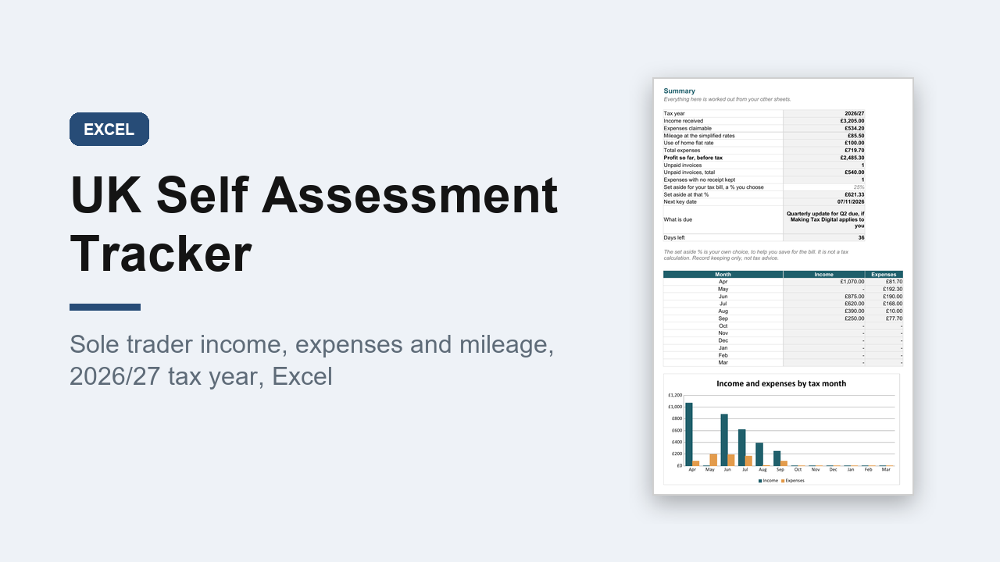

UK Self Assessment Tracker 2026/27, Sole Trader Income and Expenses Excel
GBP 7.00 · instant digital download

Keep your sole trader records in one place through the tax year, so the return in January is a matter of copying figures across.
Set up for the UK: pounds, A4, and the 6 April 2026 to 5 April 2027 tax year, with the start date editable so you can use it again next year.
What you get: one editable Excel workbook (.xlsx) with 10 sheets.
1.
Start here: plain instructions.
2.
Summary: income, expenses, profit so far, unpaid invoices, receipts missing, the next deadline and a chart by month.
3.
Income: invoices and payments, counted when you are paid, with days waiting on unpaid ones.
4.
Expenses: 400 rows, the HMRC expense headings in a dropdown and a business use %.
5.
Mileage: journeys at the simplified rates, switching to the lower rate after 10,000 miles.
6.
Monthly: each tax month (6th to 5th) plus the use of home flat rate.
7.
Quarterly: totals and each expense heading for the four quarters.
8.
Year Totals: in the same order as the self-employment pages.
9.
Key Dates: deadlines and payment dates with days left.
10.
Settings: tax year and rates, all editable.
A worked example is filled in.
Record keeping only: it does not work out tax, it is not Making Tax Digital software, and it is not financial advice.
Opens in Excel, Google Sheets and Numbers.
Digital download..
What happens after you buy
Payment and delivery are handled by Gumroad. You get the download straight after paying, and a copy of the link by email. Nothing is posted to you.
Tags: self assessment, sole trader, bookkeeping, expense tracker, self employed, uk tax year, mileage log, income tracker, excel template, small business